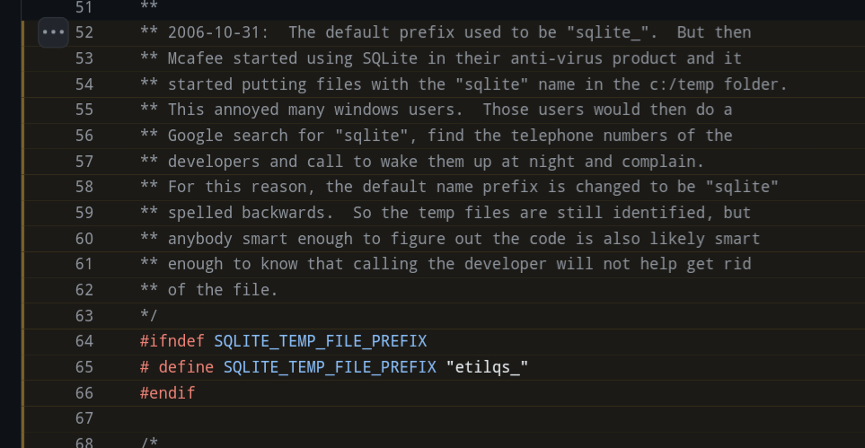
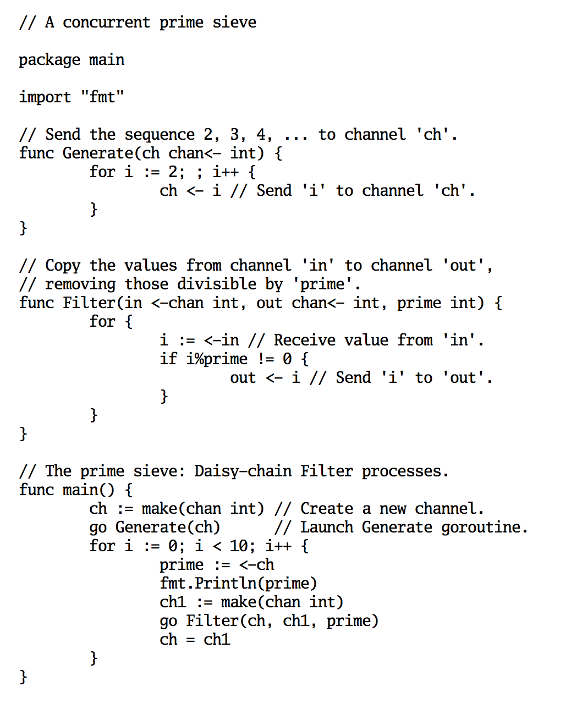
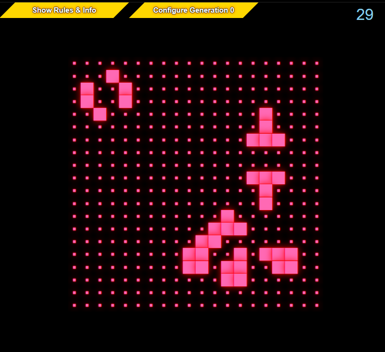

Random Weird Things - Part Ⅱ
Published at 2025-02-08T11:06:16+02:00
Every so often, I come across random, weird, and unexpected things on the internet. I thought it would be neat to share them here from time to time. This is the second run.
2024-07-05 Random Weird Things - Part Ⅰ
2025-02-08 Random Weird Things - Part Ⅱ (You are currently reading this)
2025-08-15 Random Weird Things - Part Ⅲ
/\_/\ /\_/\
( o.o ) WHOA!! ( o.o )
> ^ < > ^ <
/ \ MOEEW! / \
/______\ /______\
Table of Contents
11. The SQLite codebase is a gem
Check this out:

Source:
https://wetdry.world/@memes/112717700557038278
Go Programming
12. Official Go font
The Go programming language has an official font called "Go Font." It was created to complement the aesthetic of the Go language, ensuring clear and legible rendering of code. The font includes a monospace version for code and a proportional version for general text, supporting consistent look and readability in Go-related materials and development environments.
Check out some Go code displayed using the Go font:

https://go.dev/blog/go-fonts
The design emphasizes simplicity and readability, reflecting Go's philosophy of clarity and efficiency.
I found it interesting and/or weird, as Go is a programming language. Why should it bother having its own font? I have never seen another open-source project like Go do this. But I also like it. Maybe I will use it in the future for this blog :-)
13. Go functions can have methods
Functions on struct types? Well known. Functions on types like int and string? It's also known of, but a bit lesser. Functions on function types? That sounds a bit funky, but it's possible, too! For demonstration, have a look at this snippet:
package main
import "log"
type fun func() string
func (f fun) Bar() string {
return "Bar"
}
func main() {
var f fun = func() string {
return "Foo"
}
log.Println("Example 1: ", f())
log.Println("Example 2: ", f.Bar())
log.Println("Example 3: ", fun(f.Bar).Bar())
log.Println("Example 4: ", fun(fun(f.Bar).Bar).Bar())
}
It runs just fine:
❯ go run main.go
2025/02/07 22:56:14 Example 1: Foo
2025/02/07 22:56:14 Example 2: Bar
2025/02/07 22:56:14 Example 3: Bar
2025/02/07 22:56:14 Example 4: Bar
macOS
For personal computing, I don't use Apple, but I have to use it for work.
14. ß and ss are treated the same
Know German? In German, the letter "sharp s" is written as ß. ß is treated the same as ss on macOS.
On a case-insensitive file system like macOS, not only are uppercase and lowercase letters treated the same, but non-Latin characters like the German "ß" are also considered equivalent to their Latin counterparts (in this case, "ss").
So, even though "Maß" and "Mass" are not strictly equivalent, the macOS file system still treats them as the same filename due to its handling of Unicode characters. This can sometimes lead to unexpected behaviour. Check this out:
❯ touch Maß
❯ ls -l
-rw-r--r--@ 1 paul wheel 0 Feb 7 23:02 Maß
❯ touch Mass
❯ ls -l
-rw-r--r--@ 1 paul wheel 0 Feb 7 23:02 Maß
❯ rm Mass
❯ ls -l
❯ touch Mass
❯ ls -ltr
-rw-r--r--@ 1 paul wheel 0 Feb 7 23:02 Mass
❯ rm Maß
❯ ls -l
15. Colon as file path separator
MacOS can use the colon as a file path separator on its ADFS (file system). A typical ADFS file pathname on a hard disc might be:
ADFS::4.$.Documents.Techwriter.Myfile
I can't reproduce this on my (work) Mac, though, as it now uses the APFS file system. In essence, ADFS is an older file system, while APFS is a contemporary file system optimized for Apple's modern devices.
https://social.jvns.ca/@b0rk/113041293527832730
16. Polyglots - programs written in multiple languages
A coding polyglot is a program or script written so that it can be executed in multiple programming languages without modification. This is typically achieved by leveraging syntax overlaps or crafting valid and meaningful code in each targeted language. Polyglot programs are often created as a challenge or for demonstration purposes to showcase language similarities or clever coding techniques.
Check out my very own polyglot:
The fibonatti.pl.c Polyglot
17. Languages, where indices start at 1
Array indices start at 1 instead of 0 in some programming languages, known as one-based indexing. This can be controversial because zero-based indexing is more common in popular languages like C, C++, Java, and Python. One-based indexing can lead to off-by-one errors when developers switch between languages with different indexing schemes.
Languages with One-Based Indexing:
- Fortran
- MATLAB
- Lua
- R (for vectors and lists)
- Smalltalk
- Julia (by default, although zero-based indexing is also possible)
foo.lua example:
arr = {10, 20, 30, 40, 50}
print(arr[1]) -- Accessing the first element
❯ lua foo.lua
10
One-based indexing is more natural for human-readable, mathematical, and theoretical contexts, where counting traditionally starts from one.
18. Perl Poetry
Perl Poetry is a playful and creative practice within the programming community where Perl code is written as a poem. These poems are crafted to be syntactically valid Perl code and make sense as poetic text, often with whimsical or humorous intent. This showcases Perl's flexibility and expressiveness, as well as the creativity of its programmers.
See this Poetry of my own; the Perl interpreter does not yield any syntax error parsing that. But also, the Peom doesn't do anything useful then executed:
# (C) 2006 by Paul C. Buetow
Christmas:{time;#!!!
Children: do tell $wishes;
Santa: for $each (@children) {
BEGIN { read $each, $their, wishes and study them; use Memoize#ing
} use constant gift, 'wrapping';
package Gifts; pack $each, gift and bless $each and goto deliver
or do import if not local $available,!!! HO, HO, HO;
redo Santa, pipe $gifts, to_childs;
redo Santa and do return if last one, is, delivered;
deliver: gift and require diagnostics if our $gifts ,not break;
do{ use NEXT; time; tied $gifts} if broken and dump the, broken, ones;
The_children: sleep and wait for (each %gift) and try { to => untie $gifts };
redo Santa, pipe $gifts, to_childs;
redo Santa and do return if last one, is, delivered;
The_christmas_tree: formline s/ /childrens/, $gifts;
alarm and warn if not exists $Christmas{ tree}, @t, $ENV{HOME};
write <<EMail
to the parents to buy a new christmas tree!!!!111
and send the
EMail
;wait and redo deliver until defined local $tree;
redo Santa, pipe $gifts, to_childs;
redo Santa and do return if last one, is, delivered ;}
END {} our $mission and do sleep until next Christmas ;}
__END__
This is perl, v5.8.8 built for i386-freebsd-64int
More Perl Poetry of mine
19. CSS3 is turing complete
CSS3 is Turing complete because it can simulate a Turing machine using only CSS animations and styles without any JavaScript or external logic. This is achieved by using keyframe animations to change the styles of HTML elements in a way that encodes computation, performing calculations and state transitions.
Is CSS turing complete?
It is surprising because CSS is primarily a styling language intended for the presentation layer of web pages, not for computation or logic. Its capability to perform complex computations defies its typical use case and showcases the unintended computational power that can emerge from the creative use of seemingly straightforward technologies.
Check out this 100% CSS implementation of the Conways Game of Life:

CSS Conways Game of Life
Conway's Game of Life is Turing complete because it can simulate a universal Turing machine, meaning it can perform any computation that a computer can, given the right initial conditions and sufficient time and space. Suppose a language can implement Conway's Game of Life. In that case, it demonstrates the language's ability to handle complex state transitions and computations. It has the necessary constructs (like iteration, conditionals, and data manipulation) to simulate any algorithm, thus confirming its Turing completeness.
20. The biggest shell programs
One would think that shell scripts are only suitable for small tasks. Well, I must be wrong, as there are huge shell programs out there (up to 87k LOC) which aren't auto-generated but hand-written!
The Biggest Sell Programs in the World
My Gemtexter (bash) is only 1329 LOC as of now. So it's tiny.
Gemtexter - One Bash script to rule it all
I hope you had some fun. E-Mail your comments to paul@nospam.buetow.org :-)
Back to the main site